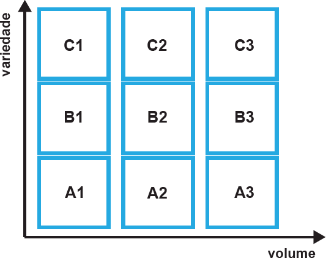

Os sistemas integrados de manufatura (SIM)
apresentam uma abordagem estratégica embasada
em tecnologia, que respondem aos desafios
competi ti vos de fabricação. Uma forma de
caracterizar esses sistemas é a partir da matriz de
variedade (de partes/peças diferentes) e volume
(da quantidade de partes/peças produzidas) da
manufatura, conforme ilustra a figura abaixo.

Considerando a matriz de variedade x volume
representada na figura, avalie as afirmações a seguir.
-
Si stemas totalmente dedicados são
adequados para produzir uma variedade
limitada de configurações de partes/peças,
no entanto, podem trabalhar com volumes
muito altos de produção, ocupando a faixa A3
da matriz.
-
Sistemas flexíveis de manufatura (FMS)
podem ocupar o nível mais alto da matriz
de volume e variedade, ocupando a faixa
C3, ou seja, são capazes de se adequar a alta
variedade de partes/peças e alto volume de
produção de partes/peças.
-
Sistemas que utilizam máquinas baseadas
em CNC (computador numericamente
controlado) podem trabalhar com alta
variedade de programação de partes/peças,
ocupando a faixa Cl da matriz, mas podem
ser inviáveis economicamente se os volumes
não forem baixos.
É correto o que se afirma em
-
I, apenas.
-
II, apenas.
-
I e III, apenas.
-
II e III, apenas.
-
I, II e III.